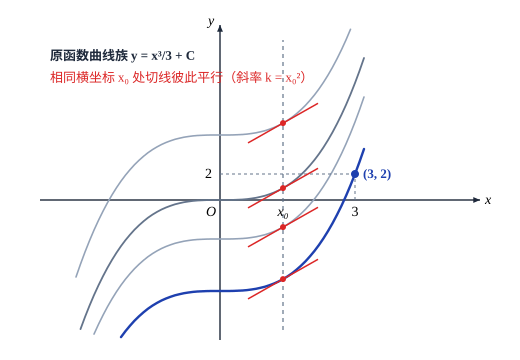

第六章 不定积分
§1 不定积分的概念和运算法则
微分的逆运算——不定积分
通过前两章的学习，我们已经能够比较熟练地计算出一个给定函数的微分或导数，并初步用它来解决某些简单的问题了．但在实际中，我们经常需要解决的另一个（或许可以说更重要的）问题是，如何在只知道一个函数的微分或导数的情况下，将这个函数“复原”出来．
如为了求解上一章的最后一节中的人口模型问题
$$ \begin{cases} p'(t) = \lambda p(t), \\ p(t_0) = p_0, \end{cases} $$我们将“$p'(t) = \lambda p(t)$”写成微分形式
$$ \frac{\mathrm{d}p}{p} = \lambda\,\mathrm{d}t, $$并把它看成是对某个隐函数
$$ f(p) = g(t) $$两边求微分的结果，这就是在已知
$$ \mathrm{d}(f(p)) = \frac{1}{p}\,\mathrm{d}p, \quad \mathrm{d}(g(t)) = \lambda\,\mathrm{d}t $$的情况下，设法求出未作微分运算之前的 $f(p)$ 和 $g(t)$ 的问题．
这样的问题比比皆是．比如已知速度函数 $v(t)$，要求位移函数 $s(t)$；已知一条平面曲线在任一点 $x$ 处的切线斜率，要求这条曲线等等，都是同一类的问题．
下面我们来给出它的一般提法．
之所以要称“一个”原函数，是由于一个函数若存在原函数，那么它的原函数必定
是不惟一的．比如，若 $F(x)$ 是 $f(x)$ 的原函数，即 $F'(x) = f(x)$，那么对任何常数 $C$，都有 $[F(x) + C]' = f(x)$，由定义 6.1.1，$F(x) + C$ 也是 $f(x)$ 的原函数，所以 $f(x)$ 的原函数有无穷多个．
那么，$f(x)$ 的所有这些原函数是否都具有 $F(x) + C$ 的形式，或者说，它们之间至多相差一个常数呢？回答是肯定的．若 $G(x)$ 是 $f(x)$ 的任一个原函数，则 $G'(x) = f(x)$，即
$$ [F(x) - G(x)]' = 0. $$由定理 5.1.4，$F(x) - G(x) = C$，即 $G(x) = F(x) + C$．
所以，只要求出了 $f(x)$ 的任意一个原函数 $F(x)$，就可以用 $F(x) + C$ 来代表 $f(x)$ 的全部原函数了．
从定义 6.1.1 和定义 6.1.2 可以知道，求不定积分 $\int f(x)\,\mathrm{d}x$ 就是由一个函数的微分 $f(x)\,\mathrm{d}x$ 求它的原函数，因此，微分运算“$\mathrm{d}$”与不定积分运算“$\int$”就像加法与减法，乘法与除法，指数与对数那样，构成了一对逆运算：
$$ \begin{matrix} F(x) & \xrightarrow{\quad\mathrm{d}\quad} \\ F(x) + C & \xleftarrow[\quad\int\quad]{} \end{matrix} \quad f(x)\,\mathrm{d}x, $$或者具体写成
$$ \mathrm{d}\left(\int f(x)\,\mathrm{d}x\right) = f(x)\,\mathrm{d}x \quad \left(\text{即 } \frac{\mathrm{d}}{\mathrm{d}x}\left(\int f(x)\,\mathrm{d}x\right) = f(x)\right) $$与
$$ \int \mathrm{d}F(x) = F(x) + C. $$说得简单一些，可以认为微分号和积分号在一起时可以互相抵消（先做微分运算后做不定积分运算时要相差一个常数）．
例 6.1.1 求 $\int \sin x\,\mathrm{d}x$．
这道题实际上是要寻找一族函数，它们的微分都等于 $\sin x\,\mathrm{d}x$．
解 由于 $\mathrm{d}(\cos x) = -\sin x\,\mathrm{d}x$，即 $\mathrm{d}(-\cos x) = \sin x\,\mathrm{d}x$，因此得到
$$ \int \sin x\,\mathrm{d}x = -\cos x + C. $$尽管在观念上，应当从微分的概念出发去讨论不定积分，在理论推导时也确实大多是这样做的．但实际求不定积分时，一般总是直接从导数出发考虑的，这样更方便
一些．
例 6.1.2 求 $\int x^\alpha\,\mathrm{d}x \quad (\alpha \neq -1)$．
解 由于 $\left(\dfrac{1}{\alpha + 1} x^{\alpha + 1}\right)' = x^\alpha$，因此有
$$ \int x^\alpha\,\mathrm{d}x = \frac{1}{\alpha + 1} x^{\alpha + 1} + C. $$例 6.1.3 求 $\int \dfrac{\mathrm{d}x}{x}$．
解 当 $x > 0$ 时，$(\ln x)' = \dfrac{1}{x}$，因此这时有
$$ \int \frac{\mathrm{d}x}{x} = \ln x + C \quad (x > 0). $$当 $x < 0$ 时，由复合函数求导法则，有 $[\ln(-x)]' = \dfrac{1}{-x}(-1) = \dfrac{1}{x}$，因此这时有
$$ \int \frac{\mathrm{d}x}{x} = \ln(-x) + C \quad (x < 0). $$把两式结合起来，便得到
$$ \int \frac{\mathrm{d}x}{x} = \ln|x| + C. $$不定积分的线性性质
证 设 $F(x)$ 和 $G(x)$ 分别为 $f(x)$ 和 $g(x)$ 的一个原函数，那么对任意常数 $k_1$ 和 $k_2$，$k_1 F(x) + k_2 G(x)$ 是 $k_1 f(x) + k_2 g(x)$ 的一个原函数，因此有
$$ \int [k_1 f(x) + k_2 g(x)]\,\mathrm{d}x = k_1 F(x) + k_2 G(x) + C, $$与
$$ \begin{aligned} k_1 \int f(x)\,\mathrm{d}x + k_2 \int g(x)\,\mathrm{d}x &= k_1 (F(x) + C_1) + k_2 (G(x) + C_2) \\ &= k_1 F(x) + k_2 G(x) + (k_1 C_1 + k_2 C_2). \end{aligned} $$由于上面两式中的 $C, C_1, C_2$ 都代表任意常数，所以上面两等式的右端所表示的函数族相同，于是有
$$ \int [k_1 f(x) + k_2 g(x)]\,\mathrm{d}x = k_1 \int f(x)\,\mathrm{d}x + k_2 \int g(x)\,\mathrm{d}x. $$证毕
根据微分与不定积分的关系以及基本初等函数的微分公式，我们可以得到一些最基本的不定积分公式，例如：
| 微 分 | 不 定 积 分 |
|---|---|
| $\mathrm{d}(\mathrm{e}^x) = \mathrm{e}^x\,\mathrm{d}x$ | $\int \mathrm{e}^x\,\mathrm{d}x = \mathrm{e}^x + C$ |
| $\mathrm{d}(\ln x) = \dfrac{\mathrm{d}x}{x}$ | $\int \dfrac{\mathrm{d}x}{x} = \ln|x| + C$ |
| $\mathrm{d}(x^\alpha) = \alpha x^{\alpha - 1}\,\mathrm{d}x$ | $\int x^\alpha\,\mathrm{d}x = \dfrac{1}{\alpha + 1} x^{\alpha + 1} + C \quad (\alpha \neq -1)$ |
| $\mathrm{d}(\sin x) = \cos x\,\mathrm{d}x$ | $\int \cos x\,\mathrm{d}x = \sin x + C$ |
| $\mathrm{d}(\cos x) = -\sin x\,\mathrm{d}x$ | $\int \sin x\,\mathrm{d}x = -\cos x + C$ |
| $\mathrm{d}(\tan x) = \sec^2 x\,\mathrm{d}x$ | $\int \sec^2 x\,\mathrm{d}x = \tan x + C$ |
| $\mathrm{d}(\cot x) = -\csc^2 x\,\mathrm{d}x$ | $\int \csc^2 x\,\mathrm{d}x = -\cot x + C$ |
| $\mathrm{d}(\sec x) = \tan x\sec x\,\mathrm{d}x$ | $\int \tan x\sec x\,\mathrm{d}x = \sec x + C$ |
| $\mathrm{d}(\csc x) = -\cot x\csc x\,\mathrm{d}x$ | $\int \cot x\csc x\,\mathrm{d}x = -\csc x + C$ |
| $\mathrm{d}(\arcsin x) = \dfrac{\mathrm{d}x}{\sqrt{1 - x^2}}$ | $\int \dfrac{\mathrm{d}x}{\sqrt{1 - x^2}} = \arcsin x + C$ |
| $\mathrm{d}(\arctan x) = \dfrac{\mathrm{d}x}{1 + x^2}$ | $\int \dfrac{\mathrm{d}x}{1 + x^2} = \arctan x + C$ |
不定积分的线性性质和上面的不定积分表可以帮助我们求出一些简单函数的不定积分．
例 6.1.4 求 $\int \tan^2 x\,\mathrm{d}x$．
解 利用三角恒等式 $\tan^2 x = \sec^2 x - 1$，
$$ \int \tan^2 x\,\mathrm{d}x = \int (\sec^2 x - 1)\,\mathrm{d}x = \int \sec^2 x\,\mathrm{d}x - \int 1\cdot\mathrm{d}x = \tan x - x + C. $$例 6.1.5 求 $\int \sin^2 \dfrac{x}{2}\,\mathrm{d}x$．
解 利用三角函数的半角公式 $\sin^2 \dfrac{x}{2} = \dfrac{1 - \cos x}{2}$，
$$ \int \sin^2 \frac{x}{2}\,\mathrm{d}x = \int \frac{1 - \cos x}{2}\,\mathrm{d}x = \frac{1}{2} \int (1 - \cos x)\,\mathrm{d}x = \frac{1}{2} (x - \sin x) + C. $$例 6.1.6 求 $\int \dfrac{(x + \sqrt{x})(x - 2\sqrt{x})^2}{\sqrt{x}}\,\mathrm{d}x$．
解 将分子展开后，与分母 $\sqrt{x}$ 相约，被积函数就化成了几个幂函数之和，于是
$$ \int \frac{(x + \sqrt{x})(x - 2\sqrt{x})^2}{\sqrt{x}}\,\mathrm{d}x = \int \frac{x^3 - 3x^2\sqrt{x} + 4x\sqrt{x}}{\sqrt{x}}\,\mathrm{d}x = \int \left(x^{\frac{5}{2}} - 3x^2 + 4x\right)\,\mathrm{d}x = \frac{2}{7} x^{\frac{7}{2}} - x^3 + 2x^2 + C. $$例 6.1.7 求 $\int \dfrac{x^4}{1 + x^2}\,\mathrm{d}x$．
解
$$ \begin{aligned} \int \frac{x^4}{1 + x^2}\,\mathrm{d}x &= \int \frac{x^4 + x^2 - x^2}{1 + x^2}\,\mathrm{d}x = \int x^2\,\mathrm{d}x - \int \frac{x^2}{1 + x^2}\,\mathrm{d}x \\ &= \int x^2\,\mathrm{d}x - \int \frac{1 + x^2 - 1}{1 + x^2}\,\mathrm{d}x = \frac{1}{3} x^3 - \int \mathrm{d}x + \int \frac{1}{1 + x^2}\,\mathrm{d}x \\ &= \frac{1}{3} x^3 - x + \arctan x + C. \end{aligned} $$对于具体问题来说，不定积分中的常数 $C$ 可以根据题目所给的条件来确定．
例 6.1.8 已知曲线 $y = f(x)$ 在任意一点 $(x, f(x))$ 处的切线斜率都等于 $x^2$，并且曲线经过点 $(3, 2)$，求该曲线的方程．
解 根据题意，有 $y' = x^2$，因此
$$ y = \int x^2\,\mathrm{d}x = \frac{1}{3} x^3 + C, $$这是 $xy$ 平面上的一族曲线（如图 6.1.1），它们在横坐标相同的点上的切线都是互相平行的．

为确定常数 $C$，利用曲线经过点 $(3, 2)$ 的条件，将 $x = 3, y = 2$ 代入上式，即可解得 $C = -7$．所以，所求的曲线为
$$ y = \frac{1}{3} x^3 - 7. $$在第五章的 §5 中求解人口模型时，最后定出常数
$$ C_1 = p_0 \mathrm{e}^{-\lambda t_0} $$实际上采用的是同一种方法．
习题 6.1
- 求下列不定积分：
(1) $\int (x^3 + 2x^2 - 5\sqrt{x})\,\mathrm{d}x$;(2) $\int (\sin x + 3\mathrm{e}^x)\,\mathrm{d}x$;(3) $\int (x^a + a^x)\,\mathrm{d}x$;(4) $\int (2 + \cot^2 x)\,\mathrm{d}x$;(5) $\int (2\csc^2 x - \sec x\tan x)\,\mathrm{d}x$;(6) $\int (x^2 - 2)^3\,\mathrm{d}x$;(7) $\int \left(x + \dfrac{1}{x}\right)^2\,\mathrm{d}x$;(8) $\int \left(\sqrt{x} + \dfrac{1}{\sqrt[3]{x^2}} + 1\right)\left(\dfrac{1}{\sqrt{x}} + 1\right)\,\mathrm{d}x$;(9) $\int \left(2^x + \dfrac{1}{3^x}\right)^2\,\mathrm{d}x$;(10) $\int \dfrac{2\cdot 3^x - 5\cdot 2^x}{3^x}\,\mathrm{d}x$;(11) $\int \dfrac{\cos 2x}{\cos x - \sin x}\,\mathrm{d}x$;(12) $\int \left(\dfrac{2}{1 + x^2} - \dfrac{3}{\sqrt{1 - x^2}}\right)\,\mathrm{d}x$;(13) $\int (1 - x^2)\sqrt{x\sqrt{x}}\,\mathrm{d}x$;(14) $\int \dfrac{\cos 2x}{\cos^2 x\sin^2 x}\,\mathrm{d}x$.
- 曲线 $y = f(x)$ 经过点 $(\mathrm{e}, -1)$，且在任一点处的切线斜率为该点横坐标的倒数，求该曲线的方程．
- 已知曲线 $y = f(x)$ 在任意一点 $(x, f(x))$ 处的切线斜率都比该点横坐标的立方根少 $1$，
- 求出该曲线方程的所有可能形式，并在直角坐标系中画出示意图；
- 若已知该曲线经过 $(1, 1)$ 点，求该曲线的方程．
§2 换元积分法和分部积分法
能通过查基本积分表再加上线性运算求出不定积分的函数类屈指可数，即使对于如 $y = \tan x, y = \ln x$ 这样常用的函数，它也是无能为力的．所以，求一般函数的不定积分必须别寻他途，下面我们介绍两种基本方法．
换元积分法
变量代换是数学研究中最常用的技巧之一，在不定积分运算中尤其有着举足轻重的作用．
由于求不定积分是微分运算 $\mathrm{d}(F(x)) = f(x)\,\mathrm{d}x$ 的逆运算，所以在用换元法求不定积分的过程中，前几章中已得到的微分运算的所有法则都可以畅通无阻，这为我们带来了很大的便利．
换元积分法可以分成两种类型：
（1）在不定积分 $\int f(x)\,\mathrm{d}x$ 中，若 $f(x)$ 可以通过等价变形化成 $\tilde{f}(g(x))g'(x)$，而函数 $\tilde{f}(u)$ 的原函数 $\tilde{F}(u)$ 是容易求的．
因为 $[\tilde{F}(g(x))]' = \tilde{F}'(g(x))g'(x) = \tilde{f}(g(x))g'(x) = f(x)$，可知，
$$ \int f(x)\,\mathrm{d}x = \tilde{F}(g(x)) + C. $$但在运算时，可采用下述步骤：用 $u = g(x)$ 对原式作变量代换，这时相应地有 $\mathrm{d}u = g'(x)\,\mathrm{d}x$，于是，
$$ \begin{aligned} \int f(x)\,\mathrm{d}x &= \int \tilde{f}(g(x))g'(x)\,\mathrm{d}x = \int \tilde{f}(g(x))\,\mathrm{d}g(x) \\ &= \int \tilde{f}(u)\,\mathrm{d}u = \tilde{F}(u) + C = \tilde{F}(g(x)) + C. \end{aligned} $$这个方法称为第一类换元积分法．（由于在将 $f(x)\,\mathrm{d}x$ 化成 $\tilde{f}(g(x))g'(x)\,\mathrm{d}x = \tilde{f}(g(x))\,\mathrm{d}g(x)$ 的过程中往往要采取适当地“凑”的办法，它也被俗称为“凑微分法”．）
第一类换元积分法的最简单情况是 $g(x)$ 为线性函数 $ax + b$．
例 6.2.1 求 $\int \dfrac{\mathrm{d}x}{x - a}$．
解 将 $f(x) = \dfrac{1}{x - a}$ 看成是 $\tilde{f}(u) = \dfrac{1}{u}$ 和 $u = x - a$ 的复合函数，因为 $\mathrm{d}(x - a) = \mathrm{d}x$，所以
$$ \begin{aligned} \int \frac{\mathrm{d}x}{x - a} &= \int \frac{\mathrm{d}(x - a)}{x - a} \quad (\text{作变量代换 } u = x - a) \\ &= \int \frac{\mathrm{d}u}{u} = \ln|u| + C \quad (\text{用 } u = x - a \text{ 代回}) \\ &= \ln|x - a| + C. \end{aligned} $$同理可以求出
$$ \int \frac{\mathrm{d}x}{(x - a)^n} = -\frac{1}{n - 1}\cdot \frac{1}{(x - a)^{n - 1}} + C \quad (n > 1), $$和
$$ \int \frac{\mathrm{d}x}{x^2 - a^2} = \frac{1}{2a} \left(\int \frac{\mathrm{d}x}{x - a} - \int \frac{\mathrm{d}x}{x + a}\right) = \frac{1}{2a} \ln\left|\frac{x - a}{x + a}\right| + C. $$例 6.2.2 求 $\int \dfrac{\mathrm{d}x}{x^2 + a^2}$．
解
$$ \begin{aligned} \int \frac{\mathrm{d}x}{x^2 + a^2} &= \frac{1}{a^2} \int \frac{\mathrm{d}x}{1 + \left(\dfrac{x}{a}\right)^2} = \frac{1}{a} \int \frac{\mathrm{d}\left(\dfrac{x}{a}\right)}{1 + \left(\dfrac{x}{a}\right)^2} \quad \left(\text{作变量代换 } u = \frac{x}{a}\right) \\ &= \frac{1}{a} \int \frac{\mathrm{d}u}{1 + u^2} = \frac{1}{a} \arctan u + C \quad \left(\text{用 } u = \frac{x}{a} \text{ 代回}\right) \\ &= \frac{1}{a} \arctan \frac{x}{a} + C. \end{aligned} $$同理可以求出
$$ \int \frac{\mathrm{d}x}{\sqrt{a^2 - x^2}} = \arcsin\frac{x}{a} + C. $$下面我们来看稍复杂一些的情况．
例 6.2.3 求 $\int \tan x\,\mathrm{d}x$．
解 因为 $\int \tan x\,\mathrm{d}x = \int \dfrac{\sin x}{\cos x}\,\mathrm{d}x$，将被积函数看成是由 $y = \dfrac{1}{u}$ 和 $u = \cos x$ 的复合函数，我们发现 $\sin x\,\mathrm{d}x$ 恰为 $-(\cos x)'\,\mathrm{d}x = -\mathrm{d}u$，于是
$$ \begin{aligned} \int \tan x\,\mathrm{d}x &= \int \frac{\sin x}{\cos x}\,\mathrm{d}x \\ &= -\int \frac{(\cos x)'\,\mathrm{d}x}{\cos x} \quad (\text{作变量代换 } u = \cos x) \\ &= -\int \frac{\mathrm{d}u}{u} = -\ln|u| + C \quad (\text{用 } u = \cos x \text{ 代回}) \end{aligned} $$ $$ = -\ln|\cos x| + C. $$等到熟练之后，只要将代换 $u = g(x)$ 默记在心，如例 6.2.3 就可以直接写出
$$ \int \tan x\,\mathrm{d}x = \int \frac{\sin x}{\cos x}\,\mathrm{d}x = -\int \frac{\mathrm{d}(\cos x)}{\cos x} = -\ln|\cos x| + C. $$例 6.2.4 求 $\int \sec x\,\mathrm{d}x$．
解
$$ \int \sec x\,\mathrm{d}x = \int \frac{1}{\cos x}\,\mathrm{d}x = \int \frac{\cos x}{\cos^2 x}\,\mathrm{d}x = \int \frac{\mathrm{d}(\sin x)}{1 - \sin^2 x}, $$作变量代换 $u = \sin x$，并利用前面得到的 $\int \dfrac{\mathrm{d}x}{x^2 - a^2} = \dfrac{1}{2a}\ln\left|\dfrac{x - a}{x + a}\right| + C$，
$$ \begin{aligned} \int \sec x\,\mathrm{d}x &= \frac{1}{2}\ln\left|\frac{1 + \sin x}{1 - \sin x}\right| + C = \frac{1}{2}\ln\frac{(1 + \sin x)^2}{1 - \sin^2 x} + C \\ &= \ln\left|\frac{1 + \sin x}{\cos x}\right| + C = \ln|\sec x + \tan x| + C. \end{aligned} $$可以类似地求出
$$ \int \cot x\,\mathrm{d}x = \ln|\sin x| + C $$和
$$ \int \csc x\,\mathrm{d}x = \ln|\csc x - \cot x| + C. $$这样，所有六个基本三角函数的不定积分公式都已经得到了．
例 6.2.5 求 $\int \dfrac{\mathrm{d}x}{\sqrt{x}(1 + x)}$．
解
$$ \int \frac{\mathrm{d}x}{\sqrt{x}(1 + x)} = 2\int \frac{1}{1 + (\sqrt{x})^2}\,\mathrm{d}(\sqrt{x}) = 2\arctan\sqrt{x} + C. $$例 6.2.6 求 $\int \sin mx \cos nx\,\mathrm{d}x \quad (m \neq n)$．
解 利用三角函数的积化和差公式，有
$$ \begin{aligned} \int \sin mx \cos nx\,\mathrm{d}x &= \frac{1}{2} \int [\sin(m + n)x + \sin(m - n)x]\,\mathrm{d}x \\ &= -\frac{1}{2}\left[\frac{\cos(m + n)x}{m + n} + \frac{\cos(m - n)x}{m - n}\right] + C. \end{aligned} $$可以类似地求出 $\int \sin mx \sin nx\,\mathrm{d}x$ 和 $\int \cos mx \cos nx\,\mathrm{d}x$．
（2）若不定积分 $\int f(x)\,\mathrm{d}x$ 不能直接求出，但能够找到一个适当的变量代换 $x = \varphi(t)$（要求 $x = \varphi(t)$ 的反函数 $t = \varphi^{-1}(x)$ 存在），将原式化为
$$ \int f(x)\,\mathrm{d}x = \int f(\varphi(t))\,\mathrm{d}\varphi(t) = \int f(\varphi(t))\varphi'(t)\,\mathrm{d}t, $$而 $f(\varphi(t))\varphi'(t)$ 的原函数 $\tilde{F}(t)$ 是容易求的．
因为
$$ \frac{\mathrm{d}}{\mathrm{d}x}\tilde{F}(\varphi^{-1}(x)) = \tilde{F}'(t)\frac{\mathrm{d}t}{\mathrm{d}x} = f(\varphi(t))\varphi'(t)\frac{\mathrm{d}t}{\mathrm{d}x} = f(\varphi(t))\varphi'(t)\frac{1}{\varphi'(t)} = f(\varphi(t)) = f(x), $$所以
$$ \int f(x)\,\mathrm{d}x = \tilde{F}(\varphi^{-1}(x)) + C. $$但在运算时，可以采用下述与第一类换元积分法方向相反的步骤：
$$ \int f(x)\,\mathrm{d}x = \int f(\varphi(t))\,\mathrm{d}\varphi(t) = \int f(\varphi(t))\varphi'(t)\,\mathrm{d}t = \tilde{F}(t) + C = \tilde{F}(\varphi^{-1}(x)) + C. $$这个方法称为第二类换元积分法．
例 6.2.7 求 $\int \sqrt{a^2 - x^2}\,\mathrm{d}x$．
解 为了去掉根号，令 $x = \varphi(t) = a\sin t \left(-\dfrac{\pi}{2} \leqslant t \leqslant \dfrac{\pi}{2}\right)$，于是 $\sqrt{a^2 - x^2} = a\cos t$，$\mathrm{d}x = a\cos t\,\mathrm{d}t$，原式化成了
$$ \begin{aligned} \int \sqrt{a^2 - x^2}\,\mathrm{d}x &= a^2 \int \cos^2 t\,\mathrm{d}t = \frac{a^2}{2} \int (1 + \cos 2t)\,\mathrm{d}t \\ &= \frac{a^2}{2}\left(t + \frac{\sin 2t}{2}\right) + C \quad \left(\text{用 } t = \varphi^{-1}(x) = \arcsin\frac{x}{a} \text{ 代回}\right) \\ &= \frac{1}{2} x\sqrt{a^2 - x^2} + \frac{a^2}{2}\arcsin\frac{x}{a} + C. \end{aligned} $$例 6.2.8 求 $\int \dfrac{\mathrm{d}x}{\sqrt{x^2 - a^2}}$ 和 $\int \dfrac{\mathrm{d}x}{\sqrt{x^2 + a^2}}$．
解 对于 $\int \dfrac{\mathrm{d}x}{\sqrt{x^2 - a^2}}$，令 $x = \varphi(t) = a\sec t$，其中 $t$ 的变化范围可以这样确定：当 $x > a$ 时，$t \in \left(0, \dfrac{\pi}{2}\right)$；而当 $x < -a$ 时，$t \in \left(\pi, \dfrac{3}{2}\pi\right)$．于是 $\sqrt{x^2 - a^2} = a\tan t$，$\mathrm{d}x = a\tan t\sec t\,\mathrm{d}t$，利用例 6.2.4 的结果，有
$$ \int \frac{\mathrm{d}x}{\sqrt{x^2 - a^2}} = \int \sec t\,\mathrm{d}t = \ln|\sec t + \tan t| + C. $$用 $\sec t = \dfrac{x}{a}$ 和 $\tan t = \sqrt{\sec^2 t - 1} = \dfrac{\sqrt{x^2 - a^2}}{a}$ 代回，由于 $C - \ln a$ 仍然是一个任意常数，因此
$$ \int \frac{\mathrm{d}x}{\sqrt{x^2 - a^2}} = \ln\left|\frac{x}{a} + \frac{\sqrt{x^2 - a^2}}{a}\right| + C = \ln|x + \sqrt{x^2 - a^2}| - \ln a + C = \ln|x + \sqrt{x^2 - a^2}| + C. $$类似地可求得
$$ \int \frac{\mathrm{d}x}{\sqrt{x^2 + a^2}} = \ln|x + \sqrt{x^2 + a^2}| + C. $$若被积函数中含有诸如 $\sqrt{a^2 - x^2}, \sqrt{x^2 - a^2}, \sqrt{x^2 + a^2}$ 这样形式的根式，可以分别考虑将变换取 $x = a\sin t, x = a\sec t$ 和 $x = a\tan t$ 以化去根号．
例 6.2.9 求 $\int x(2x - 1)^{100}\,\mathrm{d}x$．
理论上，可以利用二项式定理将被积函数 $x(2x - 1)^{100}$ 展开成多项式，其不定积分总是可以算出来的，但因工作量极其巨大，实际上是不可能这么去做的．
解 令 $2x - 1 = t$ 即 $x = \dfrac{t + 1}{2}$，则 $\mathrm{d}x = \dfrac{1}{2}\,\mathrm{d}t$，于是
$$ \begin{aligned} \int x(2x - 1)^{100}\,\mathrm{d}x &= \frac{1}{4}\int (t + 1)t^{100}\,\mathrm{d}t = \frac{1}{4}\left(\frac{t^{102}}{102} + \frac{t^{101}}{101}\right) + C \\ &= \frac{(2x - 1)^{101}}{4}\left(\frac{2x - 1}{102} + \frac{1}{101}\right) + C. \end{aligned} $$有许多题目，既可以采用第一类换元积分法，也可以采用第二类换元积分法，代换的函数形式也可以大不相同，要根据具体情况灵活运用．
例 6.2.10 求 $\int \dfrac{\mathrm{d}x}{x^2\sqrt{1 + x^2}}$．
解法一 用第一类换元积分法．当 $x > 0$ 时，原式可变形为
$$ \int \frac{\mathrm{d}x}{x^2\sqrt{1 + x^2}} = \int \frac{\mathrm{d}x}{x^3\sqrt{1 + \dfrac{1}{x^2}}} = -\int \frac{1}{2\sqrt{1 + \dfrac{1}{x^2}}}\left(-\frac{2}{x^3}\right)\,\mathrm{d}x, $$利用 $\mathrm{d}\left(\dfrac{1}{x^2}\right) = -\dfrac{2}{x^3}\,\mathrm{d}x$，于是
$$ \begin{aligned} \int \frac{\mathrm{d}x}{x^2\sqrt{1 + x^2}} &= -\int \frac{1}{2\sqrt{1 + \dfrac{1}{x^2}}}\,\mathrm{d}\left(\frac{1}{x^2}\right) = -\int \frac{1}{2\sqrt{1 + \dfrac{1}{x^2}}}\,\mathrm{d}\left(1 + \frac{1}{x^2}\right) \\ &= -\sqrt{1 + \frac{1}{x^2}} + C = -\frac{\sqrt{1 + x^2}}{x} + C. \end{aligned} $$容易验证，它也是被积函数在 $x < 0$ 时的原函数．（对类似情况，我们以后不再一一加以说明了．）
解法二 用第二类换元积分法．做代换 $x = \dfrac{1}{t}$，则 $\mathrm{d}x = -\dfrac{1}{t^2}\,\mathrm{d}t$，于是
$$ \int \frac{\mathrm{d}x}{x^2\sqrt{1 + x^2}} = -\int \frac{t\,\mathrm{d}t}{\sqrt{1 + t^2}} = -\sqrt{1 + t^2} + C = -\sqrt{1 + \frac{1}{x^2}} + C = -\frac{\sqrt{1 + x^2}}{x} + C. $$解法三 将两种换元法结合起来．先用第二类换元积分法，做代换 $x = \tan t$，则 $\mathrm{d}x = \sec^2 t\,\mathrm{d}t$，于是
$$ \int \frac{\mathrm{d}x}{x^2\sqrt{1 + x^2}} = \int \frac{\sec^2 t\,\mathrm{d}t}{\tan^2 t\sec t} = \int \frac{\cos t\,\mathrm{d}t}{\sin^2 t}. $$再用第一类换元积分法
$$ \int \frac{\cos t\,\mathrm{d}t}{\sin^2 t} = \int \frac{\mathrm{d}(\sin t)}{\sin^2 t} = -\frac{1}{\sin t} + C, $$最后代回变量，即得到
$$ \int \frac{\mathrm{d}x}{x^2\sqrt{1 + x^2}} = -\frac{\sqrt{1 + x^2}}{x} + C. $$分部积分法
分部积分法的理论基础是函数乘积的微分公式．
对任意两个可微的函数 $u(x), v(x)$，成立关系式
$$ \mathrm{d}[u(x)v(x)] = v(x)\,\mathrm{d}[u(x)] + u(x)\,\mathrm{d}[v(x)], $$两边同时求不定积分并移项，就有
$$ \int u(x)\,\mathrm{d}[v(x)] = u(x)v(x) - \int v(x)\,\mathrm{d}[u(x)], $$也即
$$ \int u(x)v'(x)\,\mathrm{d}x = u(x)v(x) - \int v(x)u'(x)\,\mathrm{d}x, $$这就是分部积分公式．
粗略看来，分部积分公式只是把原来需要求的关于 $u(x)v'(x)$ 的不定积分改为求 $u'(x)v(x)$ 的不定积分而已，两者的形式又差不多，似乎并无多大的意义，其实不然．在许多时候，直接求 $\int u(x)v'(x)\,\mathrm{d}x$ 与求 $\int v(x)u'(x)\,\mathrm{d}x$ 相比，难度是不可同日而语的．下面我们将看到，通过这么一转换，许多函数求不定积分的问题就迎刃而解了．
例 6.2.11 求 $\int x\cos x\,\mathrm{d}x$．
解 将 $x$ 看成 $u(x)$，$\cos x$ 看成 $v'(x)$，则 $u'(x) = 1, v(x) = \sin x$，代入分部积分公式，
$$ \int x\cos x\,\mathrm{d}x = \int x\,\mathrm{d}(\sin x) = x\sin x - \int \sin x\,\mathrm{d}x = x\sin x + \cos x + C. $$对有些函数，需要重复分部积分若干次才能求出它的不定积分．
例 6.2.12 求 $\int x^2\mathrm{e}^x\,\mathrm{d}x$．
解 将 $x^2$ 看成 $u(x)$，$\mathrm{e}^x$ 看成 $v'(x)$，则 $u'(x) = 2x, v(x) = \mathrm{e}^x$，代入分部积分公式
$$ \int x^2\mathrm{e}^x\,\mathrm{d}x = \int x^2\,\mathrm{d}(\mathrm{e}^x) = x^2\mathrm{e}^x - \int \mathrm{e}^x\,\mathrm{d}(x^2) = x^2\mathrm{e}^x - 2\int x\mathrm{e}^x\,\mathrm{d}x, $$对后一项再用一次分部积分，
$$ \int x\mathrm{e}^x\,\mathrm{d}x = \int x\,\mathrm{d}(\mathrm{e}^x) = x\mathrm{e}^x - \int \mathrm{e}^x\,\mathrm{d}x = x\mathrm{e}^x - \mathrm{e}^x + C, $$于是
$$ \int x^2\mathrm{e}^x\,\mathrm{d}x = \mathrm{e}^x(x^2 - 2x + 2) + C. $$等到运算熟练以后，可以省去中间步骤．
应用分部积分公式时，将哪个函数看成 $u(x)$，哪个函数看成 $v'(x)$ 是很重要的，弄错的话就有可能使得我们更加一筹莫展．如在例 6.2.11，若将 $\cos x$ 看成 $u(x)$，$x$ 看成
$v'(x)$，则 $u'(x) = -\sin x$ 而 $v(x) = \dfrac{x^2}{2}$，代入分部积分公式得到
$$ \int x\cos x\,\mathrm{d}x = \int \cos x\,\mathrm{d}\left(\frac{x^2}{2}\right) = \frac{x^2}{2}\cos x - \int \frac{x^2}{2}(-\sin x)\,\mathrm{d}x, $$结果事与愿违，最后一项变得比原来的积分更为复杂！
分部积分公式的正确使用大致有下述几种模式：
（1）通过对 $u(x)$ 求导降低它的复杂程度，而 $v'(x)$ 与 $v(x)$ 的类型相似或复杂程度相当．
记 $P_n(x)$ 为 $n$ 次多项式，则对于形如 $\int P_n(x)\sin \alpha x\,\mathrm{d}x$、$\int P_n(x)\cos \beta x\,\mathrm{d}x$ 以及 $\int P_n(x)\mathrm{e}^{\lambda x}\,\mathrm{d}x$ 之类的不定积分，总是取 $P_n(x)$ 为 $u(x)$，而将另一个函数看成 $v'(x)$，这时 $v(x)$ 是很容易求的．通过分部积分，$P_n(x)$ 的次数随着求导而逐次降低，直到最后成为常数．
例 6.2.11 和例 6.2.12 就是这种情况．
（2）通过对 $u(x)$ 求导使得它的类型与 $v(x)$ 的类型相同或相近，然后将它们作为一个统一的形式来处理．
例如，对于形如 $\int P_n(x)\arcsin x\,\mathrm{d}x$、$\int P_n(x)\arctan x\,\mathrm{d}x$ 和 $\int P_n(x)\ln x\,\mathrm{d}x$ 之类的不定积分，总是取 $P_n(x)$ 为 $v'(x)$，而将另一个函数看成 $u(x)$，这时关于 $u'(x)v(x)$ 的不定积分就比较容易求出．
例 6.2.13 求 $\int \ln x\,\mathrm{d}x$．
解 将 $\ln x$ 看成 $u(x)$，而将 $1$ 看成 $v'(x)$，则 $u'(x) = \dfrac{1}{x}, v(x) = x$，代入分部积分公式，
$$ \int \ln x\,\mathrm{d}x = x\ln x - \int x\cdot\frac{1}{x}\,\mathrm{d}x = x(\ln x - 1) + C. $$例 6.2.14 求 $\int x\arctan x\,\mathrm{d}x$．
解 将 $\arctan x$ 看成 $u(x)$，$x$ 看成 $v'(x)$，则 $u'(x) = \dfrac{1}{1 + x^2}, v(x) = \dfrac{x^2}{2}$，代入分部积分公式得
$$ \begin{aligned} \int x\arctan x\,\mathrm{d}x &= \frac{x^2}{2}\arctan x - \frac{1}{2}\int \frac{x^2}{1 + x^2}\,\mathrm{d}x \\ &= \frac{x^2}{2}\arctan x - \frac{1}{2}\int \left(1 - \frac{1}{1 + x^2}\right)\,\mathrm{d}x \\ &= \frac{1 + x^2}{2}\arctan x - \frac{x}{2} + C. \end{aligned} $$例 6.2.15 求 $\int \dfrac{x}{1 + \cos x}\,\mathrm{d}x$．
解 利用分部积分法和换元积分法得
$$ \begin{aligned} \int \frac{x}{1 + \cos x}\,\mathrm{d}x &= \int \frac{x}{2\cos^2 \dfrac{x}{2}}\,\mathrm{d}x = \int x\,\mathrm{d}\tan\frac{x}{2} \\ &= x\tan\frac{x}{2} - \int \tan\frac{x}{2}\,\mathrm{d}x = x\tan\frac{x}{2} + 2\ln\left|\cos\frac{x}{2}\right| + C. \end{aligned} $$（3）利用有些函数经数次求导后形式会复原的性质，通过若干次分部积分，使等式右边也产生 $\int u(x)\cdot v'(x)\,\mathrm{d}x$ 的项，只要它的系数不为 $1$，就可以用解方程的办法求得 $\int u(x)v'(x)\,\mathrm{d}x$．
如对于形如 $\int \mathrm{e}^{\lambda x}\sin \alpha x\,\mathrm{d}x$ 或 $\int \mathrm{e}^{\lambda x}\cos \beta x\,\mathrm{d}x$ 之类的不定积分，可以取 $\mathrm{e}^{\lambda x}$ 与 $\sin \alpha x$（或 $\cos \beta x$）中任一个为 $u(x)$，而另一个为 $v'(x)$；对于 $\int \sqrt{x^2 + a^2}\,\mathrm{d}x$ 之类的不定积分，则可将 $u(x)$ 取作 $\sqrt{x^2 + a^2}$，而将 $v'(x)$ 视为 $1$．
例 6.2.16 求 $\int \mathrm{e}^x\sin x\,\mathrm{d}x$．
解 将 $\sin x$ 看成 $u(x)$，$\mathrm{e}^x$ 看成 $v'(x)$，应用分部积分公式，
$$ \int \mathrm{e}^x\sin x\,\mathrm{d}x = \mathrm{e}^x\sin x - \int \mathrm{e}^x\cos x\,\mathrm{d}x, $$在等式右端的积分中，将 $\cos x$ 看成 $u(x)$，$\mathrm{e}^x$ 看成 $v'(x)$，再次应用分部积分公式，得到
$$ \int \mathrm{e}^x\sin x\,\mathrm{d}x = \mathrm{e}^x\sin x - \int \mathrm{e}^x\cos x\,\mathrm{d}x = \mathrm{e}^x\sin x - \mathrm{e}^x\cos x - \int \mathrm{e}^x\sin x\,\mathrm{d}x. $$等式的两边都出现了所要求的 $\int \mathrm{e}^x\sin x\,\mathrm{d}x$，把它们都移到等式的左边，解出
$$ \int \mathrm{e}^x\sin x\,\mathrm{d}x = \frac{\mathrm{e}^x(\sin x - \cos x)}{2} + C. $$类似地可以得到
$$ \int \mathrm{e}^x\cos x\,\mathrm{d}x = \frac{\mathrm{e}^x(\sin x + \cos x)}{2} + C. $$例 6.2.17 求 $\int \sqrt{x^2 + a^2}\,\mathrm{d}x$ 和 $\int \sqrt{x^2 - a^2}\,\mathrm{d}x$．
解 以 $\int \sqrt{x^2 + a^2}\,\mathrm{d}x$ 为例，这个不定积分是可以用第二类换元积分法求的，但用分部积分的方法更为简单些．
$$ \begin{aligned} \int \sqrt{x^2 + a^2}\,\mathrm{d}x &= x\sqrt{x^2 + a^2} - \int \frac{x^2}{\sqrt{x^2 + a^2}}\,\mathrm{d}x \\ &= x\sqrt{x^2 + a^2} - \int \frac{x^2 + a^2 - a^2}{\sqrt{x^2 + a^2}}\,\mathrm{d}x \\ &= x\sqrt{x^2 + a^2} + \int \frac{a^2}{\sqrt{x^2 + a^2}}\,\mathrm{d}x - \int \sqrt{x^2 + a^2}\,\mathrm{d}x. \end{aligned} $$移项，解得
$$ \begin{aligned} \int \sqrt{x^2 + a^2}\,\mathrm{d}x &= \frac{1}{2}\left(x\sqrt{x^2 + a^2} + \int \frac{a^2}{\sqrt{x^2 + a^2}}\,\mathrm{d}x\right) \\ &= \frac{1}{2}\left(x\sqrt{x^2 + a^2} + a^2 \ln|x + \sqrt{x^2 + a^2}|\right) + C. \end{aligned} $$最后一项利用了例 6.2.8 的结果．
类似地可以求出
$$ \int \sqrt{x^2 - a^2}\,\mathrm{d}x = \frac{1}{2}\left(x\sqrt{x^2 - a^2} - a^2 \ln|x + \sqrt{x^2 - a^2}|\right) + C. $$（4）对某些形如 $\int f^n(x)\,\mathrm{d}x$ 的不定积分，利用分部积分法降低幂指数，导出递推公式．
例 6.2.18 求 $I_n = \int \dfrac{\mathrm{d}x}{(x^2 + a^2)^n}$．
解 由例 6.2.2，
$$ I_1 = \int \frac{\mathrm{d}x}{x^2 + a^2} = \frac{1}{a}\arctan\frac{x}{a} + C, $$而对于 $n \geqslant 2$，有
$$ I_n = \int \frac{\mathrm{d}x}{(x^2 + a^2)^n} = \frac{1}{a^2}\int \frac{x^2 + a^2 - x^2}{(x^2 + a^2)^n}\,\mathrm{d}x = \frac{I_{n - 1}}{a^2} + \frac{1}{a^2}\int \frac{-x^2}{(x^2 + a^2)^n}\,\mathrm{d}x. $$对最后一项用分部积分，
$$ I_n = \frac{I_{n - 1}}{a^2} + \frac{1}{2a^2(n - 1)}\int x\,\mathrm{d}\left[\frac{1}{(x^2 + a^2)^{n - 1}}\right] = \frac{I_{n - 1}}{a^2} + \frac{1}{2a^2(n - 1)}\frac{x}{(x^2 + a^2)^{n - 1}} - \frac{I_{n - 1}}{2a^2(n - 1)}. $$于是得到递推关系
$$ \begin{cases} I_n = \dfrac{2n - 3}{2a^2(n - 1)}I_{n - 1} + \dfrac{1}{2a^2(n - 1)}\cdot \dfrac{x}{(x^2 + a^2)^{n - 1}}, & n \geqslant 2, \\ I_1 = \dfrac{1}{a}\arctan\dfrac{x}{a} + C. \end{cases} $$基本积分表
上节和本节中所得到的结果绝大部分可以作为基本积分公式，应该熟练掌握，为了便于使用，我们将它们集中在下面的表中．
基本积分表
由于任一个二次多项式 $ax^2 + bx + c$ 必能通过配方化成 $a[(x - p)^2 \pm q^2]$ 形式，因此最后的六个（实际上是八个）公式对于求某些 $f(ax^2 + bx + c)$ 型的不定积分是很有用的．下面我们再举两个例题．
例 6.2.19 求 $\int (x + 1)\sqrt{x^2 - 2x + 5}\,\mathrm{d}x$．
我们分别用换元积分法与分部积分法来求此不定积分：
解法一 作变量代换 $x - 1 = 2\tan t$，那么 $\mathrm{d}x = 2\sec^2 t\,\mathrm{d}t$，于是
$$ \begin{aligned} \int (x + 1)\sqrt{x^2 - 2x + 5}\,\mathrm{d}x &= \int (x + 1)\sqrt{(x - 1)^2 + 4}\,\mathrm{d}x \\ &= \int 8(1 + \tan t)\sec^3 t\,\mathrm{d}t = 8\int \sec^3 t\,\mathrm{d}t + 8\int \tan t\sec^3 t\,\mathrm{d}t \\ &= 8\int \sec^3 t\,\mathrm{d}t + 8\int \sec^2 t\,\mathrm{d}(\sec t) = 8\int \sec^3 t\,\mathrm{d}t + \frac{8}{3}\sec^3 t. \end{aligned} $$对于计算 $\int \sec^3 t\,\mathrm{d}t$，利用分部积分法与例 6.2.4 的结果，就有
$$ \begin{aligned} \int \sec^3 t\,\mathrm{d}t &= \int \sec t\,\mathrm{d}\tan t = \sec t\tan t - \int \tan^2 t\sec t\,\mathrm{d}t \\ &= \sec t\tan t - \int (\sec^2 t - 1)\sec t\,\mathrm{d}t \\ &= \sec t\tan t - \int \sec^3 t\,\mathrm{d}t + \int \sec t\,\mathrm{d}t \\ &= \sec t\tan t - \int \sec^3 t\,\mathrm{d}t + \ln|\sec t + \tan t|, \end{aligned} $$移项得到
$$ \int \sec^3 t\,\mathrm{d}t = \frac{1}{2}[\sec t\tan t + \ln|\sec t + \tan t|] + C. $$注意到 $\tan t = \dfrac{x - 1}{2}$ 及 $\sec t = \sqrt{1 + \tan^2 t} = \sqrt{1 + \left(\dfrac{x - 1}{2}\right)^2} = \dfrac{\sqrt{x^2 - 2x + 5}}{2}$，即得
$$ \int (x + 1)\sqrt{x^2 - 2x + 5}\,\mathrm{d}x $$ $$ \begin{aligned} &= \frac{8}{3}\sec^3 t + 4[\sec t\tan t + \ln|\sec t + \tan t|] + C \\ &= \frac{1}{3}(x^2 - 2x + 5)^{\frac{3}{2}} + (x - 1)\sqrt{x^2 - 2x + 5} + 4\ln|(x - 1) + \sqrt{x^2 - 2x + 5}| + C. \end{aligned} $$解法二 直接利用例 6.2.17 的结果．
$$ \begin{aligned} \int (x + 1)\sqrt{x^2 - 2x + 5}\,\mathrm{d}x &= \frac{1}{2}\int (2x - 2)\sqrt{x^2 - 2x + 5}\,\mathrm{d}x + 2\int \sqrt{x^2 - 2x + 5}\,\mathrm{d}x \\ &= \frac{1}{2}\int \sqrt{x^2 - 2x + 5}\,\mathrm{d}(x^2 - 2x + 5) + 2\int \sqrt{(x - 1)^2 + 4}\,\mathrm{d}x \\ &= \frac{1}{3}(x^2 - 2x + 5)^{\frac{3}{2}} + 2\int \sqrt{(x - 1)^2 + 4}\,\mathrm{d}x. \end{aligned} $$对于 $\int \sqrt{(x - 1)^2 + 4}\,\mathrm{d}x$，由例 6.2.17 得
$$ \begin{aligned} \int \sqrt{(x - 1)^2 + 4}\,\mathrm{d}x &= \int \sqrt{(x - 1)^2 + 4}\,\mathrm{d}(x - 1) \\ &= \frac{1}{2}(x - 1)\sqrt{(x - 1)^2 + 4} + 2\ln|(x - 1) + \sqrt{(x - 1)^2 + 4}| + C \\ &= \frac{1}{2}(x - 1)\sqrt{x^2 - 2x + 5} + 2\ln|(x - 1) + \sqrt{x^2 - 2x + 5}| + C, \end{aligned} $$因此
$$ \begin{aligned} &\int (x + 1)\sqrt{x^2 - 2x + 5}\,\mathrm{d}x \\ &= \frac{1}{3}(x^2 - 2x + 5)^{\frac{3}{2}} + (x - 1)\sqrt{x^2 - 2x + 5} + 4\ln|(x - 1) + \sqrt{x^2 - 2x + 5}| + C. \end{aligned} $$读者可以发现，对于这一问题，用分部积分法比用换元积分法要方便．
例 6.2.20 求 $\int \dfrac{\mathrm{d}x}{\sqrt{x^2 + 2\xi x + \eta^2}}$．
解 将 $x^2 + 2\xi x + \eta^2$ 配方后化成 $(x + \xi)^2 \pm |\eta^2 - \xi^2|$，把 $|\eta^2 - \xi^2|$ 看作 $a^2$，便有
$$ \int \frac{\mathrm{d}x}{\sqrt{x^2 + 2\xi x + \eta^2}} = \int \frac{\mathrm{d}(x + \xi)}{\sqrt{(x + \xi)^2 \pm |\eta^2 - \xi^2|}} = \ln|(x + \xi) + \sqrt{x^2 + 2\xi x + \eta^2}| + C. $$这是一个一般的结果，比如当 $\xi = -2, \eta^2 = 5$ 时，得到
$$ \int \frac{\mathrm{d}x}{\sqrt{x^2 - 4x + 5}} = \ln|(x - 2) + \sqrt{x^2 - 4x + 5}| + C. $$对于求诸如 $\int \dfrac{(ax + b)\,\mathrm{d}x}{x^2 + 2\xi x + \eta^2}$、$\int \dfrac{(ax + b)\,\mathrm{d}x}{\sqrt{x^2 + 2\xi x + \eta^2}}$ 和 $\int (ax + b)\sqrt{x^2 + 2\xi x + \eta^2}\,\mathrm{d}x$ 型的不定积分，解题思路是类似的（只是先要如例 6.2.19 那样对 $ax + b$ 作一次拆项）．读者应掌握这一方法的本质，而不必去死背公式．
习题 6.2
- 求下列不定积分：
(1) $\int \dfrac{\mathrm{d}x}{4x - 3}$;(2) $\int \dfrac{\mathrm{d}x}{\sqrt{1 - 2x^2}}$;(3) $\int \dfrac{\mathrm{d}x}{\mathrm{e}^x - \mathrm{e}^{-x}}$;(4) $\int \mathrm{e}^{3x + 2}\,\mathrm{d}x$;(5) $\int (2^x + 3^x)^2\,\mathrm{d}x$;(6) $\int \dfrac{1}{2 + 5x^2}\,\mathrm{d}x$;(7) $\int \sin^5 x\,\mathrm{d}x$;(8) $\int \tan^{10} x\sec^2 x\,\mathrm{d}x$;(9) $\int \sin 5x\cos 3x\,\mathrm{d}x$;(10) $\int \cos^2 5x\,\mathrm{d}x$;(11) $\int \dfrac{(2x + 4)\,\mathrm{d}x}{(x^2 + 4x + 5)^2}$;(12) $\int \dfrac{\sin\sqrt{x}}{\sqrt{x}}\,\mathrm{d}x$;(13) $\int \dfrac{x^2\,\mathrm{d}x}{\sqrt[4]{1 - 2x^3}}$;(14) $\int \dfrac{1}{1 - \sin x}\,\mathrm{d}x$;(15) $\int \dfrac{\sin x + \cos x}{\sqrt[3]{\sin x - \cos x}}\,\mathrm{d}x$;(16) $\int \dfrac{\mathrm{d}x}{(\arcsin x)^2\sqrt{1 - x^2}}$;(17) $\int \dfrac{\mathrm{d}x}{x^2 - 2x + 2}$;(18) $\int \dfrac{1 - x}{\sqrt{9 - 4x^2}}\,\mathrm{d}x$;(19) $\int \tan\sqrt{1 + x^2}\dfrac{x}{\sqrt{1 + x^2}}\,\mathrm{d}x$;(20) $\int \dfrac{\sin x\cos x}{1 + \sin^4 x}\,\mathrm{d}x$.
- 求下列不定积分：
(1) $\int \dfrac{\mathrm{d}x}{\sqrt{1 + \mathrm{e}^{2x}}}$;(2) $\int \dfrac{\mathrm{d}x}{x\sqrt{1 + x^2}}$;(3) $\int \dfrac{\arctan\sqrt{x}}{\sqrt{x}(1 + x)}\,\mathrm{d}x$;(4) $\int \dfrac{1 + \ln x}{(x\ln x)^2}\,\mathrm{d}x$;(5) $\int (x - 1)(x + 2)^{20}\,\mathrm{d}x$;(6) $\int x^2(x + 1)^n\,\mathrm{d}x$;(7) $\int \dfrac{\mathrm{d}x}{x^4\sqrt{1 + x^2}}$;(8) $\int \dfrac{\sqrt{x^2 - 9}}{x}\,\mathrm{d}x$;(9) $\int \dfrac{\mathrm{d}x}{\sqrt{(1 - x^2)^3}}$;(10) $\int \dfrac{\mathrm{d}x}{\sqrt{(x^2 + a^2)^3}}$;(11) $\int \sqrt{\dfrac{x - a}{x + a}}\,\mathrm{d}x$;(12) $\int x\sqrt{\dfrac{x}{2a - x}}\,\mathrm{d}x$;(13) $\int \dfrac{\mathrm{d}x}{1 + \sqrt{2x}}$;(14) $\int x^2\sqrt[3]{1 - x}\,\mathrm{d}x$;(15) $\int \dfrac{\mathrm{d}x}{x\sqrt{x^2 - 1}}$;(16) $\int \dfrac{x^2}{\sqrt{a^2 - x^2}}\,\mathrm{d}x$;(17) $\int \dfrac{\sqrt{a^2 - x^2}}{x^4}\,\mathrm{d}x$;(18) $\int \dfrac{\mathrm{d}x}{1 + \sqrt{1 - x^2}}$;(19) $\int \dfrac{x^{15}}{(x^4 - 1)^3}\,\mathrm{d}x$;(20) $\int \dfrac{1}{x(x^n + 1)}\,\mathrm{d}x$.
- 求下列不定积分：
(1) $\int x\mathrm{e}^{2x}\,\mathrm{d}x$;(2) $\int x\ln(x - 1)\,\mathrm{d}x$;(3) $\int x^2\sin 3x\,\mathrm{d}x$;(4) $\int \dfrac{x}{\sin^2 x}\,\mathrm{d}x$;(5) $\int x\cos^2 x\,\mathrm{d}x$;(6) $\int \arcsin x\,\mathrm{d}x$;(7) $\int \arctan x\,\mathrm{d}x$;(8) $\int x^2\arctan x\,\mathrm{d}x$;(9) $\int x\tan^2 x\,\mathrm{d}x$;(10) $\int \dfrac{\arcsin x}{\sqrt{1 - x}}\,\mathrm{d}x$;(11) $\int \ln^2 x\,\mathrm{d}x$;(12) $\int x^2\ln x\,\mathrm{d}x$;(13) $\int \mathrm{e}^{-x}\sin 5x\,\mathrm{d}x$;(14) $\int \mathrm{e}^x\sin^2 x\,\mathrm{d}x$;(15) $\int \dfrac{\ln^3 x}{x^2}\,\mathrm{d}x$;(16) $\int \cos(\ln x)\,\mathrm{d}x$;(17) $\int (\arcsin x)^2\,\mathrm{d}x$;(18) $\int \sqrt{x}\mathrm{e}^{\sqrt{x}}\,\mathrm{d}x$;(19) $\int \mathrm{e}^{\sqrt{x + 1}}\,\mathrm{d}x$;(20) $\int \ln(x + \sqrt{1 + x^2})\,\mathrm{d}x$.
- 已知 $f(x)$ 的一个原函数为 $\dfrac{\sin x}{1 + x\sin x}$，求 $\int f(x)f'(x)\,\mathrm{d}x$．
- 设 $f'(\sin^2 x) = \cos 2x + \tan^2 x$，求 $f(x)$．
- 设 $f(\ln x) = \dfrac{\ln(1 + x)}{x}$，求 $\int f(x)\,\mathrm{d}x$．
- 求不定积分 $\int \dfrac{\cos x}{\sin x + \cos x}\,\mathrm{d}x$ 与 $\int \dfrac{\sin x}{\sin x + \cos x}\,\mathrm{d}x$．
- 求下列不定积分的递推表达式（$n$ 为非负整数）：
(1) $I_n = \int \sin^n x\,\mathrm{d}x$;(2) $I_n = \int \tan^n x\,\mathrm{d}x$;(3) $I_n = \int \dfrac{\mathrm{d}x}{\cos^n x}$;(4) $I_n = \int x^n\sin x\,\mathrm{d}x$;(5) $I_n = \int \mathrm{e}^x\sin^n x\,\mathrm{d}x$;(6) $I_n = \int x^\alpha\ln^n x\,\mathrm{d}x \quad (\alpha \neq -1)$;(7) $I_n = \int \dfrac{x^n}{\sqrt{1 - x^2}}\,\mathrm{d}x$;(8) $I_n = \int \dfrac{\mathrm{d}x}{x^n\sqrt{1 + x}}$.
- 导出求 $\int \dfrac{(ax + b)\,\mathrm{d}x}{x^2 + 2\xi x + \eta^2}$、$\int \dfrac{(ax + b)\,\mathrm{d}x}{\sqrt{x^2 + 2\xi x + \eta^2}}$ 和 $\int (ax + b)\sqrt{x^2 + 2\xi x + \eta^2}\,\mathrm{d}x$ 型不定积分的公式．
- 求下列不定积分：
(1) $\int (5x + 3)\sqrt{x^2 + x + 2}\,\mathrm{d}x$;(2) $\int (x - 1)\sqrt{x^2 + 2x - 5}\,\mathrm{d}x$;(3) $\int \dfrac{(x - 1)\,\mathrm{d}x}{\sqrt{x^2 + x + 1}}$;(4) $\int \dfrac{(x + 2)\,\mathrm{d}x}{\sqrt{5 + x - x^2}}$.
- 设 $n$ 次多项式 $p(x) = \sum\limits_{i=0}^n a_i x^i$，系数满足关系 $\sum\limits_{i=1}^n \dfrac{a_i}{(i - 1)!} = 0$，证明不定积分 $\int p\left(\dfrac{1}{x}\right)\mathrm{e}^x\,\mathrm{d}x$ 是初等函数．
§3 有理函数的不定积分及其应用
有理函数的不定积分
初等函数的不定积分并非都是初等函数，如 $\int \dfrac{\sin x}{x}\,\mathrm{d}x$、$\int \mathrm{e}^{-x^2}\,\mathrm{d}x$、$\int \dfrac{\mathrm{d}x}{\ln x}$ 和 $\int \sqrt{1 - k^2\sin^2 x}\,\mathrm{d}x \ (0 < k^2 < 1)$ 等，就无法用基本初等函数的有限次四则运算和复合来表达，俗称“积不出”（注意，这并不意味这些被积函数没有原函数，学了定积分以后我们会知道，任何一个连续函数必存在原函数，只是上述不定积分不能用初等函数表示出来）．
形如 $\dfrac{p_m(x)}{q_n(x)}$ 的函数称为有理函数，这里 $p_m(x)$ 和 $q_n(x)$ 分别是 $m$ 次和 $n$ 次多项式．在本节中，我们将通过介绍求一般有理函数的不定积分的方法，证明这样的一个结论：有理函数的原函数一定是初等函数．
求有理函数的不定积分是我们在实际应用中经常遇到的问题，此外，对于求某些其他类型函数的不定积分，如无理函数、三角函数的不定积分问题，也可以通过适当的变换化成求有理函数的不定积分问题而得到解决．
在考虑有理函数的不定积分 $\int \dfrac{p_m(x)}{q_n(x)}\,\mathrm{d}x$ 时，我们总假定 $\dfrac{p_m(x)}{q_n(x)}$ 是真分式，即成立 $m < n$，因为不然的话，可以通过多项式的带余除法，使得
$$ \frac{p_m(x)}{q_n(x)} = p_{m-n}(x) + \frac{r(x)}{q_n(x)}, $$其中 $p_{m-n}(x)$ 是 $m - n$ 次多项式，而 $r(x)$ 是次数不超过 $n - 1$ 的多项式．这样就得到
$$ \int \frac{p_m(x)}{q_n(x)}\,\mathrm{d}x = \int p_{m-n}(x)\,\mathrm{d}x + \int \frac{r(x)}{q_n(x)}\,\mathrm{d}x. $$由于求 $\int p_{m-n}(x)\,\mathrm{d}x$ 非常容易，原问题就变为求一个真分式类型的有理函数的不定积分了．另外，为了讨论的方便，我们假定 $q_n(x)$ 的最高次项系数为 $1$．
由代数学基本定理，分母多项式 $q_n(x)$ 在复数域上恰有 $n$ 个根．由于 $q_n(x)$ 是实多项式，因此它的根要么是实根，要么是成对出现的共轭复根．设它的全部实根为 $\alpha_1, \alpha_2, \dots, \alpha_r$，其重数分别为 $m_1, m_2, \dots, m_r$；全部复根为 $\beta_1 \pm \mathrm{i}\gamma_1, \beta_2 \pm \mathrm{i}\gamma_2, \dots, \beta_s \pm \mathrm{i}\gamma_s$，其重数
分别为 $n_1, n_2, \dots, n_s$（$\sum\limits_{k=1}^r m_k + 2\sum\limits_{k=1}^s n_k = n$），记 $\xi_k = -\beta_k, \eta_k^2 = \beta_k^2 + \gamma_k^2 \ (\xi_k^2 < \eta_k^2)$，则在实数域上可将 $q_n(x)$ 因式分解为
$$ q_n(x) = \prod_{k=1}^r (x - \alpha_k)^{m_k} \cdot \prod_{k=1}^s (x^2 + 2\xi_k x + \eta_k^2)^{n_k}. $$求有理函数的不定积分 $\int \dfrac{p_m(x)}{q_n(x)}\,\mathrm{d}x$ 的关键，是将有理函数 $\dfrac{p_m(x)}{q_n(x)}$ 分解成简单分式之和，再分别求简单分式的不定积分．
证 令 $\dfrac{p(\alpha)}{q_1(\alpha)} = \lambda$，则 $x = \alpha$ 是多项式 $p(x) - \lambda q_1(x)$ 的根，设
$$ p(x) - \lambda q_1(x) = (x - \alpha)p_1(x), $$就得到
$$ \frac{p(x)}{q(x)} = \frac{\lambda}{(x - \alpha)^k} + \frac{p_1(x)}{(x - \alpha)^{k-1}q_1(x)}. $$证毕
证 令
$$ \frac{p(\beta + \mathrm{i}\gamma)}{q^*(\beta + \mathrm{i}\gamma)} = \mu(\beta + \mathrm{i}\gamma) + \nu, $$其中 $\mu, \nu$ 为实数，则
$$ \frac{p(\beta - \mathrm{i}\gamma)}{q^*(\beta - \mathrm{i}\gamma)} = \mu(\beta - \mathrm{i}\gamma) + \nu. $$于是 $x = \beta \pm \mathrm{i}\gamma$ 是多项式 $p(x) - (\mu x + \nu)q^*(x)$ 的根，设
$$ p(x) - (\mu x + \nu)q^*(x) = (x^2 + 2\xi x + \eta^2)p^*(x), $$就得到
$$ \frac{p(x)}{q(x)} = \frac{\mu x + \nu}{(x^2 + 2\xi x + \eta^2)^l} + \frac{p^*(x)}{(x^2 + 2\xi x + \eta^2)^{l-1}q^*(x)}. $$证毕
重复应用定理 6.3.1 与 6.3.2，可将有理函数
$$ \frac{p_m(x)}{q_n(x)} = \frac{p_m(x)}{\prod\limits_{k=1}^r (x - \alpha_k)^{m_k} \cdot \prod\limits_{k=1}^s (x^2 + 2\xi_k x + \eta_k^2)^{n_k}} $$分解成简单分式之和，分解的规律是，若 $q_n(x)$ 含有因子 $(x - \alpha_k)^{m_k}$，则在和式中就有项
$$ \frac{A_{k1}}{x - \alpha_k} + \frac{A_{k2}}{(x - \alpha_k)^2} + \cdots + \frac{A_{k m_k}}{(x - \alpha_k)^{m_k}}; $$若 $q_n(x)$ 含有因子 $(x^2 + 2\xi_k x + \eta_k^2)^{n_k}$，则在和式中就有项
$$ \frac{M_{k1}x + N_{k1}}{x^2 + 2\xi_k x + \eta_k^2} + \frac{M_{k2}x + N_{k2}}{(x^2 + 2\xi_k x + \eta_k^2)^2} + \cdots + \frac{M_{k n_k}x + N_{k n_k}}{(x^2 + 2\xi_k x + \eta_k^2)^{n_k}}. $$即
$$ \frac{p_m(x)}{q_n(x)} = \sum_{k=1}^r \left[ \frac{A_{k1}}{x - \alpha_k} + \frac{A_{k2}}{(x - \alpha_k)^2} + \cdots + \frac{A_{k m_k}}{(x - \alpha_k)^{m_k}} \right] + \sum_{k=1}^s \left[ \frac{M_{k1}x + N_{k1}}{x^2 + 2\xi_k x + \eta_k^2} + \cdots + \frac{M_{k n_k}x + N_{k n_k}}{(x^2 + 2\xi_k x + \eta_k^2)^{n_k}} \right], $$其中 $A_{kj}, M_{kj}, N_{kj}$ 可以用待定系数法具体算出来．
由不定积分的线性性质，即知求 $\int \dfrac{p_m(x)}{q_n(x)}\,\mathrm{d}x$，它所涉及的不定积分只有两种类型：
(1) $\int \dfrac{\mathrm{d}x}{(x - a)^n} \ (n \ge 1)$．
在例 6.2.1，我们已经得到
$$ \int \frac{\mathrm{d}x}{(x - a)^n} = \begin{cases} \ln|x - a| + C, & n = 1, \\ -\dfrac{1}{(n - 1)(x - a)^{n-1}} + C, & n \ge 2. \end{cases} $$(2) $\int \dfrac{Mx + N}{(x^2 + 2\xi x + \eta^2)^n}\,\mathrm{d}x \ (n \ge 1, \xi^2 < \eta^2)$．
首先，将原式化成
$$ \int \frac{Mx + N}{(x^2 + 2\xi x + \eta^2)^n}\,\mathrm{d}x = \frac{M}{2}\int \frac{2x + 2\xi}{(x^2 + 2\xi x + \eta^2)^n}\,\mathrm{d}x + (N - M\xi)\int \frac{\mathrm{d}x}{(x^2 + 2\xi x + \eta^2)^n}. $$等号右端第一项中的积分可利用第一类换元积分法，
$$ \int \frac{2x + 2\xi}{(x^2 + 2\xi x + \eta^2)^n}\,\mathrm{d}x = \int \frac{\mathrm{d}(x^2 + 2\xi x + \eta^2)}{(x^2 + 2\xi x + \eta^2)^n} = \begin{cases} \ln(x^2 + 2\xi x + \eta^2) + C, & n = 1, \\ -\dfrac{1}{(n - 1)(x^2 + 2\xi x + \eta^2)^{n-1}} + C, & n \ge 2. \end{cases} $$等号右端第二项中的积分可配成
$$ I_n = \int \frac{\mathrm{d}(x + \xi)}{[(x + \xi)^2 + (\eta^2 - \xi^2)]^n}, $$再应用例 6.2.18 的结果，即得到 $I_n =$
$$ I_n = \begin{cases} \dfrac{1}{\sqrt{\eta^2 - \xi^2}}\arctan\dfrac{x + \xi}{\sqrt{\eta^2 - \xi^2}} + C, & n = 1, \\[10pt] \dfrac{1}{2(\eta^2 - \xi^2)(n - 1)}\left[ \dfrac{x + \xi}{[(x + \xi)^2 + (\eta^2 - \xi^2)]^{n-1}} + (2n - 3)I_{n-1} \right], & n \ge 2. \end{cases} $$特别地，
$$ I_2 = \frac{1}{2(\eta^2 - \xi^2)}\left[ \frac{x + \xi}{(x + \xi)^2 + (\eta^2 - \xi^2)} + \frac{1}{\sqrt{\eta^2 - \xi^2}}\arctan\frac{x + \xi}{\sqrt{\eta^2 - \xi^2}} \right] + C. $$至此，在理论上，求有理函数的不定积分问题已经圆满地得到了解决，并且上面的结果也告诉我们，有理函数的原函数一定是初等函数．
例 6.3.1 求 $\int \dfrac{4x^3 - 13x^2 + 3x + 8}{(x + 1)(x - 2)(x - 1)^2}\,\mathrm{d}x$．
解 先将被积函数分解成简单分式之和．设
$$ \frac{4x^3 - 13x^2 + 3x + 8}{(x + 1)(x - 2)(x - 1)^2} = \frac{A}{x + 1} + \frac{B}{x - 2} + \frac{C}{x - 1} + \frac{D}{(x - 1)^2}, $$将右边通分后，两边的分子应该相等，所以
$$ 4x^3 - 13x^2 + 3x + 8 = A(x - 2)(x - 1)^2 + B(x + 1)(x - 1)^2 + C(x + 1)(x - 2)(x - 1) + D(x + 1)(x - 2). $$令 $x = -1$，得到 $A = 1$；令 $x = 2$，得到 $B = -2$；令 $x = 1$，得到 $D = -1$；两边求导后再令 $x = 1$，得到 $C = 5$（或者比较 $x^3$ 的系数，$C = 4 - A - B = 5$），于是
$$ \begin{aligned} \int \frac{4x^3 - 13x^2 + 3x + 8}{(x + 1)(x - 2)(x - 1)^2}\,\mathrm{d}x &= \int \left[ \frac{1}{x + 1} - \frac{2}{x - 2} + \frac{5}{x - 1} - \frac{1}{(x - 1)^2} \right]\,\mathrm{d}x \\ &= \ln\left|\frac{(x + 1)(x - 1)^5}{(x - 2)^2}\right| + \frac{1}{x - 1} + C. \end{aligned} $$请注意，除非万不得已，要尽量避免将右式全部展开后与左边比较系数，建立线性方程组再去求解的烦琐方法．
例 6.3.2 求 $\int \dfrac{x^4 + x^3 + 3x^2 - 1}{(x^2 + 1)^2(x - 1)}\,\mathrm{d}x$．
解 设
$$ \frac{x^4 + x^3 + 3x^2 - 1}{(x^2 + 1)^2(x - 1)} = \frac{A}{x - 1} + \frac{Bx + C}{x^2 + 1} + \frac{Dx + E}{(x^2 + 1)^2}, $$则
$$ x^4 + x^3 + 3x^2 - 1 = A(x^2 + 1)^2 + (Bx + C)(x - 1)(x^2 + 1) + (Dx + E)(x - 1). $$令 $x = 1$，得到 $A = 1$；比较 $x^4$ 的系数，得到 $B = 1 - A = 0$；比较 $x^3$ 的系数，右边只有一项 $-Bx^3 + Cx^3$，得 $C = 1$；令 $x = \mathrm{i}$，得到
$$ 3 - \mathrm{i} = (D\mathrm{i} + E)(\mathrm{i} - 1) = (-D - E) + (E - D)\mathrm{i}, $$再令它们的实部和虚部分别相等，得到 $D = 2$ 和 $E = 1$．（或令 $x = 0$ 得 $E = 1$，再令 $x = 2$ 即得 $D = 2$．）于是
$$ \begin{aligned} \int \frac{x^4 + x^3 + 3x^2 - 1}{(x^2 + 1)^2(x - 1)}\,\mathrm{d}x &= \int \left[ \frac{1}{x - 1} + \frac{1}{x^2 + 1} + \frac{2x + 1}{(x^2 + 1)^2} \right]\,\mathrm{d}x \\ &= \ln|x - 1| + \arctan x + \int \frac{\mathrm{d}(x^2 + 1)}{(x^2 + 1)^2} + \int \frac{\mathrm{d}x}{(x^2 + 1)^2} \\ &= \ln|x - 1| + \frac{3}{2}\arctan x - \frac{1}{x^2 + 1} + \frac{x}{2(x^2 + 1)} + C. \end{aligned} $$可化成有理函数不定积分的情况
前面已经说了，有些函数的不定积分可以通过适当的变换化成有理函数的不定积分，我们在此仅举两方面的例子．
1. $R\left(x, \sqrt[n]{\dfrac{\xi x + \eta}{\mu x + \nu}}\right)$ 类的不定积分
这里 $R(u, v)$ 表示两个变量 $u, v$ 的有理函数（即分子和分母都是关于 $u, v$ 的二元多项式）．
对 $\int R\left(x, \sqrt[n]{\dfrac{\xi x + \eta}{\mu x + \nu}}\right)\mathrm{d}x$ 作变量代换 $\sqrt[n]{\dfrac{\xi x + \eta}{\mu x + \nu}} = t$．由于 $x = \dfrac{-\nu t^n + \eta}{\mu t^n - \xi}$ 是 $t$ 的有理函数，而有理函数与有理函数的复合仍为有理函数，有理函数的导数也是有理函数，因此，
$$ \int R\left(x, \sqrt[n]{\frac{\xi x + \eta}{\mu x + \nu}}\right)\mathrm{d}x = \int R\left(\frac{-\nu t^n + \eta}{\mu t^n - \xi}, t\right)\left(\frac{-\nu t^n + \eta}{\mu t^n - \xi}\right)'\mathrm{d}t, $$上式右端的被积函数是一个关于变量 $t$ 的有理函数，用前面讲过的方法就可以将它求出来．
$R\left(x, \sqrt[n]{\dfrac{\xi x + \eta}{\mu x + \nu}}\right)$ 类型不定积分的最常见的简单情况是 $\mu = 0$，这时被积函数变成了 $R(x, \sqrt[n]{\xi x + \eta})$．
例 6.3.3 求 $\int \dfrac{x\,\mathrm{d}x}{\sqrt{4x - 3}}$．
解 令 $\sqrt{4x - 3} = t$，则 $x = \dfrac{1}{4}(t^2 + 3), \mathrm{d}x = \dfrac{1}{2}t\,\mathrm{d}t$．所以
$$ \begin{aligned} \int \frac{x\,\mathrm{d}x}{\sqrt{4x - 3}} &= \int \frac{\frac{1}{4}(t^2 + 3)\cdot \frac{1}{2}t\,\mathrm{d}t}{t} = \frac{1}{8}\int (t^2 + 3)\,\mathrm{d}t \\ &= \frac{1}{24}t^3 + \frac{3}{8}t + C = \frac{1}{24}(4x - 3)^{3/2} + \frac{3}{8}(4x - 3)^{1/2} + C \\ &= \frac{1}{12}\sqrt{4x - 3}(2x + 3) + C. \end{aligned} $$例 6.3.4 求 $\int \dfrac{\mathrm{d}x}{x(\sqrt{x} - \sqrt[3]{x})}$．
解 为了同时去掉 $\sqrt{x}$ 和 $\sqrt[3]{x}$ 中的根号，令 $x = t^6$，于是 $\mathrm{d}x = 6t^5\,\mathrm{d}t$，所以
$$ \begin{aligned} \int \frac{\mathrm{d}x}{x(\sqrt{x} - \sqrt[3]{x})} &= \int \frac{6t^5\,\mathrm{d}t}{t^6(t^3 - t^2)} = 6\int \frac{\mathrm{d}t}{t^3(t - 1)} \\ &= 6\int \left( \frac{1}{t - 1} - \frac{1}{t} - \frac{1}{t^2} - \frac{1}{t^3} \right)\,\mathrm{d}t \\ &= 6\left( \ln\left|\frac{t - 1}{t}\right| + \frac{1}{t} + \frac{1}{2t^2} \right) + C \\ &= 6\ln\left|\frac{\sqrt[6]{x} - 1}{\sqrt[6]{x}}\right| + \frac{6}{\sqrt[6]{x}} + \frac{3}{\sqrt[3]{x}} + C. \end{aligned} $$例 6.3.5 求 $\int \dfrac{\sqrt{1 + x}}{x\sqrt{1 - x}}\,\mathrm{d}x$．
解 令 $\sqrt{\dfrac{1 + x}{1 - x}} = t$，则 $x = \dfrac{t^2 - 1}{t^2 + 1}, \mathrm{d}x = \dfrac{4t}{(t^2 + 1)^2}\,\mathrm{d}t$，所以
$$ \int \frac{\sqrt{1 + x}}{x\sqrt{1 - x}}\,\mathrm{d}x = 4\int \frac{t^2\,\mathrm{d}t}{(t^2 - 1)(t^2 + 1)} = \int \left( \frac{1}{t - 1} - \frac{1}{t + 1} + \frac{2}{t^2 + 1} \right)\,\mathrm{d}t $$ $$ \begin{aligned} &= \ln\left|\frac{t - 1}{t + 1}\right| + 2\arctan t + C \\ &= \ln\left|\frac{\sqrt{1 + x} - \sqrt{1 - x}}{\sqrt{1 + x} + \sqrt{1 - x}}\right| + 2\arctan\sqrt{\frac{1 + x}{1 - x}} + C. \end{aligned} $$对形如 $R\left(x, \sqrt[n]{\dfrac{\xi x + \eta}{\mu x + \nu}}, \sqrt[m]{\dfrac{\xi x + \eta}{\mu x + \nu}}\right)$ 类的不定积分，可设 $k$ 为 $n$ 与 $m$ 的最小公倍数，再作代换 $\sqrt[k]{\dfrac{\xi x + \eta}{\mu x + \nu}} = t$，然后套用上面的步骤来做．
例 6.3.6 求 $\int \dfrac{\mathrm{d}x}{\sqrt[3]{(x - 1)^2(x + 1)^4}}$．
解 将 $\dfrac{\mathrm{d}x}{\sqrt[3]{(x - 1)^2(x + 1)^4}}$ 化为等价形式 $\dfrac{1}{(x + 1)^2}\sqrt[3]{\left(\dfrac{x + 1}{x - 1}\right)^2}\,\mathrm{d}x$．令 $\sqrt[3]{\dfrac{x + 1}{x - 1}} = t$，则 $\dfrac{x + 1}{x - 1} = t^3, x = \dfrac{t^3 + 1}{t^3 - 1}, \mathrm{d}x = \dfrac{-6t^2}{(t^3 - 1)^2}\,\mathrm{d}t$．于是
$$ \int \frac{\mathrm{d}x}{\sqrt[3]{(x - 1)^2(x + 1)^4}} = -\frac{3}{2}\int \frac{\mathrm{d}t}{t^2} = \frac{3}{2t} + C = \frac{3}{2}\sqrt[3]{\frac{x - 1}{x + 1}} + C. $$2. $R(\sin x, \cos x)$ 类的不定积分
这里 $R(u, v)$ 的意义与上面相同．
由于 $\tan x, \cot x, \sec x$ 和 $\csc x$ 都是 $\sin x$ 和 $\cos x$ 的有理函数，所以凡是三角函数的有理函数都可以化成 $\sin x$ 和 $\cos x$ 的有理函数，因此我们只要研究如何去求形如
$$ \int R(\sin x, \cos x)\,\mathrm{d}x $$的不定积分就可以了．
用三角函数的万能公式 $\tan\dfrac{x}{2} = t$ 作代换，则
$$ \sin x = \frac{2\sin\frac{x}{2}\cos\frac{x}{2}}{\cos^2\frac{x}{2} + \sin^2\frac{x}{2}} = \frac{2t}{1 + t^2}, \quad \cos x = \frac{\cos^2\frac{x}{2} - \sin^2\frac{x}{2}}{\cos^2\frac{x}{2} + \sin^2\frac{x}{2}} = \frac{1 - t^2}{1 + t^2}, $$而 $x = 2\arctan t, \mathrm{d}x = \dfrac{2\,\mathrm{d}t}{1 + t^2}$．于是，原式化成了求有理函数
$$ \int R(\sin x, \cos x)\,\mathrm{d}x = \int R\left(\frac{2t}{1 + t^2}, \frac{1 - t^2}{1 + t^2}\right)\frac{2\,\mathrm{d}t}{1 + t^2} $$的不定积分，同样可以用前面讲过的方法将它求出来．
例 6.3.7 求 $\int \dfrac{\mathrm{d}x}{4 + 4\sin x + \cos x}$．
解 作代换 $\tan\dfrac{x}{2} = t$，则
$$ \sin x = \frac{2t}{1 + t^2}, \quad \cos x = \frac{1 - t^2}{1 + t^2}, \quad \mathrm{d}x = \mathrm{d}(2\arctan t) = \frac{2\,\mathrm{d}t}{1 + t^2}, $$ $$ \begin{aligned} \int \frac{\mathrm{d}x}{4 + 4\sin x + \cos x} &= \int \frac{\frac{2\,\mathrm{d}t}{1 + t^2}}{4 + 4\cdot\frac{2t}{1 + t^2} + \frac{1 - t^2}{1 + t^2}} = 2\int \frac{\mathrm{d}t}{3t^2 + 8t + 5} \\ &= 2\int \frac{\mathrm{d}t}{(3t + 5)(t + 1)} \end{aligned} $$ $$ \begin{aligned} &= \int \left( \frac{1}{t + 1} - \frac{3}{3t + 5} \right)\,\mathrm{d}t = \ln|t + 1| - \ln|3t + 5| + C \\ &= \ln\left|\tan\frac{x}{2} + 1\right| - \ln\left|3\tan\frac{x}{2} + 5\right| + C. \end{aligned} $$尽管用万能公式可以确保求出所有的 $R(\sin x, \cos x)$ 类函数的不定积分，但也不能一见到三角函数的有理函数，就不管具体情况地将万能公式用上去，事实上，利用三角函数的性质或其他方法在很多时候会更方便．
例 6.3.8 求 $\int \dfrac{\cot x\,\mathrm{d}x}{1 + \sin x}$．
解 用万能公式，作代换 $\tan\dfrac{x}{2} = t$，则 $\cot x = \dfrac{\cos x}{\sin x} = \dfrac{1 - t^2}{2t}$，
$$ \int \frac{\cot x\,\mathrm{d}x}{1 + \sin x} = \int \frac{\frac{1 - t^2}{2t}\cdot\frac{2\,\mathrm{d}t}{1 + t^2}}{1 + \frac{2t}{1 + t^2}} = \int \frac{1 - t^2}{t(1 + t)^2}\,\mathrm{d}t = \int \frac{1 - t}{t(1 + t)}\,\mathrm{d}t. $$将右端分解为简单分式的和式，得
$$ \int \left( \frac{1}{t} - \frac{2}{1 + t} \right)\,\mathrm{d}t = \ln\left|\frac{\tan\frac{x}{2}}{(\tan\frac{x}{2} + 1)^2}\right| + C. $$事实上，可以利用三角关系式和换元积分法，
$$ \begin{aligned} \int \frac{\cot x\,\mathrm{d}x}{1 + \sin x} &= \int \frac{\cos x\,\mathrm{d}x}{\sin x(1 + \sin x)} = \int \frac{\mathrm{d}(\sin x)}{\sin x(1 + \sin x)} = \int \left( \frac{1}{\sin x} - \frac{1}{1 + \sin x} \right)\,\mathrm{d}(\sin x) \\ &= \ln\left|\frac{\sin x}{1 + \sin x}\right| + C. \end{aligned} $$计算过程简洁，结果更为简明（请读者验证，两种方法算出的解 $\ln\left|\frac{\tan\frac{x}{2}}{(\tan\frac{x}{2} + 1)^2}\right|$ 与 $\ln\left|\frac{\sin x}{1 + \sin x}\right|$ 只相差一个常数）．
因此，在求三角函数有理式的不定积分时，不要滥用万能公式．
习题 6.3
- 求下列不定积分：
(1) $\int \dfrac{\mathrm{d}x}{(x - 1)(x + 1)^2}$;(2) $\int \dfrac{2x + 3}{(x^2 - 1)(x^2 + 1)}\,\mathrm{d}x$;(3) $\int \dfrac{x\,\mathrm{d}x}{(x + 1)(x + 2)^2(x + 3)^3}$;(4) $\int \dfrac{\mathrm{d}x}{(x^2 + 4x + 4)(x^2 + 4x + 5)^2}$;(5) $\int \dfrac{3}{x^3 + 1}\,\mathrm{d}x$;(6) $\int \dfrac{\mathrm{d}x}{x^4 + x^2 + 1}$;(7) $\int \dfrac{x^4 + 5x + 4}{x^2 + 5x + 4}\,\mathrm{d}x$;(8) $\int \dfrac{x^3 + 1}{x^3 + 5x - 6}\,\mathrm{d}x$;(9) $\int \dfrac{x^2}{1 - x^4}\,\mathrm{d}x$;(10) $\int \dfrac{\mathrm{d}x}{x^4 + 1}$;(11) $\int \dfrac{\mathrm{d}x}{(x^2 + 1)(x^2 + x + 1)}$;(12) $\int \dfrac{x^2 + 1}{x(x^3 - 1)}\,\mathrm{d}x$;(13) $\int \dfrac{x^2 + 2}{(x^2 + x + 1)^2}\,\mathrm{d}x$;(14) $\int \dfrac{1 - x^7}{x(1 + x^7)}\,\mathrm{d}x$;(15) $\int \dfrac{x^9}{(x^{10} + 2x^5 + 2)^2}\,\mathrm{d}x$;(16) $\int \dfrac{x^{3n - 1}}{(x^{2n} + 1)^2}\,\mathrm{d}x$.
- 在什么条件下，$f(x) = \dfrac{ax^2 + bx + c}{x(x + 1)^2}$ 的原函数仍是有理函数？
- 设 $p_n(x)$ 是一个 $n$ 次多项式，求 $$ \int \frac{p_n(x)}{(x - a)^{n+1}}\,\mathrm{d}x. $$
- 求下列不定积分：
(1) $\int \dfrac{x}{\sqrt{2 + 4x}}\,\mathrm{d}x$;(2) $\int \dfrac{\mathrm{d}x}{\sqrt{(x - a)(b - x)}}$;(3) $\int \dfrac{x^2}{\sqrt{1 + x - x^2}}\,\mathrm{d}x$;(4) $\int \dfrac{x^2 + 1}{x\sqrt{x^4 + 1}}\,\mathrm{d}x$;(5) $\int \dfrac{\sqrt{x + 1} - \sqrt{x - 1}}{\sqrt{x + 1} + \sqrt{x - 1}}\,\mathrm{d}x$;(6) $\int \sqrt{\dfrac{x + 1}{x - 1}}\,\mathrm{d}x$;(7) $\int \dfrac{\mathrm{d}x}{\sqrt{x}(1 + x)}$;(8) $\int \dfrac{\mathrm{d}x}{x^4\sqrt{1 + x^2}}$;(9) $\int \dfrac{\mathrm{d}x}{\sqrt{x} + \sqrt[4]{x}}$;(10) $\int \sqrt[3]{\dfrac{(x - 4)^2}{(x + 1)^8}}\,\mathrm{d}x$;(11) $\int \dfrac{\mathrm{d}x}{\sqrt[3]{(x - 2)(x + 1)^2}}$;(12) $\int \dfrac{\mathrm{d}x}{x\sqrt[4]{1 + x^4}}$.
- 设 $R(u, v, w)$ 是 $u, v, w$ 的有理函数，给出 $$ \int R(x, \sqrt{a + x}, \sqrt{b + x})\,\mathrm{d}x $$ 的求法．
- 求下列不定积分：
(1) $\int \dfrac{\mathrm{d}x}{4 + 5\cos x}$;(2) $\int \dfrac{\mathrm{d}x}{2 + \sin x}$;(3) $\int \dfrac{\mathrm{d}x}{3 + \sin^2 x}$;(4) $\int \dfrac{\mathrm{d}x}{1 + \sin x + \cos x}$;(5) $\int \dfrac{\mathrm{d}x}{2\sin x - \cos x + 5}$;(6) $\int \dfrac{\mathrm{d}x}{(2 + \cos x)\sin x}$;(7) $\int \dfrac{\mathrm{d}x}{\tan x + \sin x}$;(8) $\int \dfrac{\mathrm{d}x}{\sin(x + a)\cos(x + b)}$;(9) $\int \tan x\tan(x + a)\,\mathrm{d}x$;(10) $\int \dfrac{\sin x\cos x}{\sin x + \cos x}\,\mathrm{d}x$;(11) $\int \dfrac{\mathrm{d}x}{\sin^2 x\cos^2 x}$;(12) $\int \dfrac{\sin^2 x}{1 + \sin^2 x}\,\mathrm{d}x$.
- 求下列不定积分：
(1) $\int \dfrac{x\mathrm{e}^x}{(1 + x)^2}\,\mathrm{d}x$;(2) $\int \dfrac{\ln x}{(1 + x^2)^{3/2}}\,\mathrm{d}x$;(3) $\int \ln^2(x + \sqrt{1 + x^2})\,\mathrm{d}x$;(4) $\int \sqrt{x}\ln^2 x\,\mathrm{d}x$;(5) $\int x^2\mathrm{e}^x\sin x\,\mathrm{d}x$;(6) $\int \ln(1 + x^2)\,\mathrm{d}x$;(7) $\int \dfrac{x^2\arcsin x}{\sqrt{1 - x^2}}\,\mathrm{d}x$;(8) $\int \dfrac{1}{x\sqrt{x^2 - 2x - 3}}\,\mathrm{d}x$;(9) $\int \arctan\sqrt{x}\,\mathrm{d}x$;(10) $\int \sqrt{x}\sin\sqrt{x}\,\mathrm{d}x$;(11) $\int \dfrac{x + \sin x}{1 + \cos x}\,\mathrm{d}x$;(12) $\int \dfrac{\sqrt{1 + \sin x}}{\cos x}\,\mathrm{d}x$;(13) $\int \dfrac{\sin^2 x}{\cos^3 x}\,\mathrm{d}x$;(14) $\int \mathrm{e}^{\sin x}\dfrac{x\cos^3 x - \sin x}{\cos^2 x}\,\mathrm{d}x$;(15) $\int \dfrac{\mathrm{d}x}{\mathrm{e}^x - \mathrm{e}^{-x}}$;(16) $\int \dfrac{\mathrm{d}x}{a^2\sin^2 x + b^2\cos^2 x} \ (ab \neq 0)$;(17) $\int \dfrac{\sqrt[3]{x}}{x(\sqrt{x} + \sqrt[3]{x})}\,\mathrm{d}x$;(18) $\int x\ln\dfrac{1 + x}{1 - x}\,\mathrm{d}x$;(19) $\int \sqrt{1 - x^2}\arcsin x\,\mathrm{d}x$;(20) $\int \dfrac{\mathrm{d}x}{(1 + \mathrm{e}^x)^2}$.